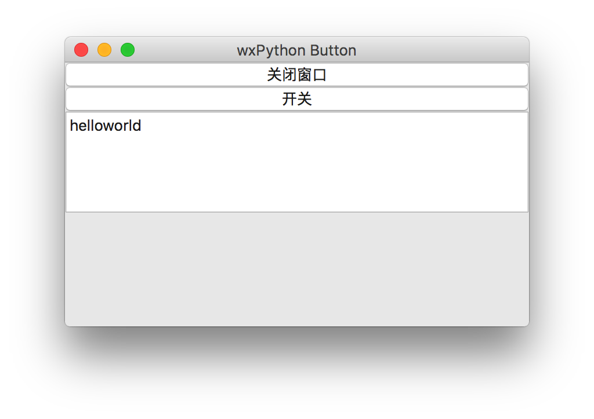
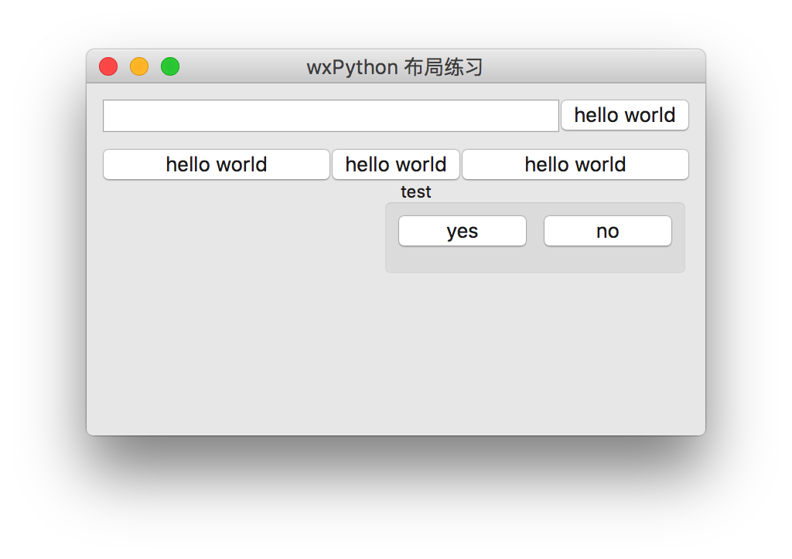
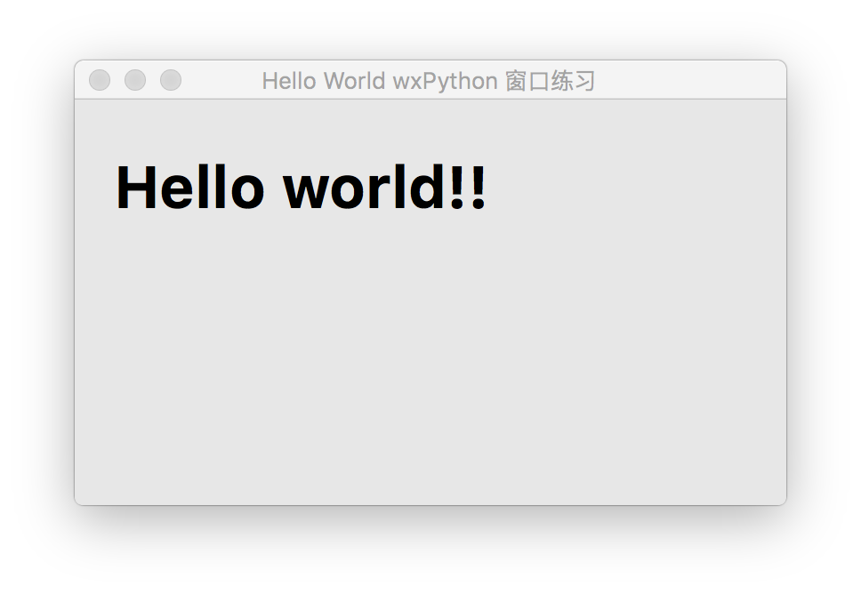

wxPython编程学习笔记(08)wx.ListBox 下拉列表框
2018-12-27 09:51:07 Python GUI
wx.ListBox 下拉列表框
wx.ListBox是以中数据展示的小部件，使用方便简单，可以用来展示比较单一的数据，例如：各种地址，名称列表等。
这次准备了一个基于wx.ListBox构建的小小通讯录，实现了增删改但是木有查，为什么没有查？因为我没写，就这样了。
具体效果展示如下：

wx.ListBox的创建及一些方法
创建
listbox = wx.ListBox(panel,choices=ls)
ListBox 有些常用的方法，用来处理列表中的数据
listbox.Append(text) 添加
listbox.GetSelection() 获取索引
listbox.GetString(sel) 通过索引获取字符串
listbox.Delete(sel) 删除当前索引
listbox.Insert(renamed, sel) 在当前索引处添加新的值，返回当前索引
listbox.SetSelection(item_id) 根据索引值选择项
listbox.Clear() 清空当前列表
通讯录的数据保存
作为一个简单的通讯录应该能保存数据，处于简单化处理，我只保存一个文本到目录下，若是需要可以使用数据库。 通讯录在操作的同时我们要更新保存数据，所以，我建了三个方法，分别处理新建数据文本，打开读取，保存数据。 分别对应：newFile openFile saveFile,这样配合这几个方法就可以实现一个简单的通讯录了。
具体代码如下，可以跑跑看啦：
本文源码下载：
wxPython编程学习笔记(07)wxPython Dialog 弹出对话
2018-12-25 13:17:28 Python GUI

wxPython dialogs 弹出对话框
程序中经常会遇到弹出对话框询问操作的场景，wxPython dialogs为此提供了应用的支持， wxPython dialogs有几种，常用的比如：wx.MessageBox wx.MessageDialog wx.Dialog wx.adv.AboutBox等。
dialog的创建
一般dialog都会配合Button使用，当按钮绑定事件后，在绑定事件的函数中创建应用即可，代码如下：
wx.MessageDialog(None, 'Download completed', 'Info', wx.OK)
其它类型的Dialog创建也类似如下代码，其中风格参数如下：
flag meaning
wx.OK show OK button
wx.CANCEL show Cancel button
wx.YES_NO show Yes, No buttons
wx.YES_DEFAULT make Yes button the default
wx.NO_DEFAULT make No button the default
wx.ICON_EXCLAMATION show an alert icon
wx.ICON_ERROR show an error icon
wx.ICON_HAND same as wx.ICON_ERROR
wx.ICON_INFORMATION show an info icon
wx.ICON_QUESTION show a question icon
可以根据自己的需要进行组合，例如组合YES和NO，yes默认选择，并且加带图标的代码：wx.YES_NO|wx.YES_DEFAULT | wx.ICON_INFORMATION
MessageDialog 获取返回值
当点击对话框上的按钮后窗口就会关闭，我们需要获得关闭后的返回值，可以通过如下代码获得：
dial = wx.MessageDialog(None, 'Are you sure to quit?', 'Question',
wx.YES_NO | wx.YES_DEFAULT | wx.ICON_QUESTION)
ret = dial.ShowModal()
if ret == wx.ID_YES:
print("YES")
else:
print("NO")
好啦，完整的代码在下边，大家可以跑跑看看。
Dialog和窗口间传递数据
遇到过一个在主窗口弹出Dialog的需求，因为是第一次用wxPython，所以不知道数据如何传送给主窗口，后来网上扒了扒发现了一些答案。 我这里的解决方案：
- 先在Dialog窗口中创建类属性，然后通过类属性传递给主窗口
- Dialog中创建一个属性self.ret=0，当点击按钮的时候设置其值为1，这样判断一下这个值，用来接收数据，如果为0就不接收。
具体可以参考下边的代码
import wx
class MyDialog(wx.Dialog):
def __init__(self, *args, **kw):
super(MyDialog, self).__init__(*args, **kw)
self.ret = 0
hbox = wx.BoxSizer(wx.HORIZONTAL)
self.st = wx.TextCtrl(self, wx.ID_ANY, "111")
self.bt = wx.Button(self, wx.ID_ANY, "提交数据")
self.bt.Bind(wx.EVT_BUTTON,self.onButton)
hbox.AddMany([(self.st),(self.bt)])
self.SetSizer(hbox)
def onButton(self,e):
self.ret=1
self.EndModal(1)
class HelloFrame(wx.Frame):
def __init__(self, *args, **kw):
# 调用父类的创建方法
super(HelloFrame, self).__init__(*args, **kw)
hbox = wx.BoxSizer(wx.VERTICAL)
bt0 = wx.Button(self, 1, "wx.Dialog")
bt1 = wx.Button(self, 1, "wx.Dialog")
bt2 = wx.Button(self, 1, 'Error')
bt3 = wx.Button(self, 1, 'Question')
bt4 = wx.Button(self, 1, 'Alert')
bt0.Bind(wx.EVT_BUTTON, self.onModal0)
bt1.Bind(wx.EVT_BUTTON, self.onModal1)
bt2.Bind(wx.EVT_BUTTON, self.showMessage1)
bt3.Bind(wx.EVT_BUTTON, self.showMessage2)
bt4.Bind(wx.EVT_BUTTON, self.showMessage3)
hbox.AddMany([(bt0, 1, wx.EXPAND | wx.ALIGN_TOP), (bt1, 1, wx.EXPAND), (bt2, 1, wx.EXPAND), (bt3, 1, wx.EXPAND),
(bt4, 1, wx.EXPAND), ])
self.SetSizer(hbox)
def onModal0(self, event):
'''模态'''
myDialog= MyDialog(None, 22, title="Dialog")
myDialog.ShowModal()
if myDialog.ret == 1:
print(myDialog.st.GetValue())
else:
print("888888")
myDialog.Destroy()
def onModal1(self, event):
'''无模态'''
wx.Dialog(self, 1, "Dialog", pos=(100, 100)).Show()
def showMessage(self, e):
smd = wx.MessageDialog(None, "This is a Message Box", "Message",
wx.YES_NO | wx.YES_DEFAULT | wx.ICON_INFORMATION)
smd.ShowModal()
def showMessage1(self, event):
dial = wx.MessageDialog(None, 'Download completed', 'Info', wx.OK)
ret = dial.ShowModal()
if ret == wx.OK:
print("OK")
def showMessage2(self, event):
dial = wx.MessageDialog(None, 'Are you sure to quit?', 'Question',
wx.YES_NO | wx.YES_DEFAULT | wx.ICON_QUESTION)
ret = dial.ShowModal()
if ret == wx.ID_YES:
print("YES")
else:
print("NO")
def showMessage3(self, event):
dial = wx.MessageBox('Download completed', 'Info',
wx.OK | wx.ICON_INFORMATION)
ret = dial
if ret == wx.OK:
print("OK")
def main():
app = wx.App()
frm = HelloFrame(None, title='wxPython Button', )
frm.Show() # 显示窗口
app.MainLoop() # 持续更新窗口
if __name__ == '__main__':
main()
本文源码下载：
wxPython编程学习笔记(06)wx.ComboBox下拉列表框
2018-12-24 14:24:56 Python GUI

wx.ComboBox下拉列表框
下拉列表框，可以通过下拉列表选择内容，在使用中可以为内容节省不少空间，是GUI中比较常用的小部件。
wx.ComboBox的创建与绑定
#创建ComboBox
l = ["Python","Django","Flask","wxPython","Java"]
cb = wx.ComboBox(pnl, pos=(20, 20), choices=l,style=wx.CB_READONLY)
cb.Bind(wx.EVT_COMBOBOX, self.OnSelect)
通过以上方法即可简单的创建
ComboBox
与绑定事件.
具体代码再下边，跑下即可了解。
import wx
class HelloFrame(wx.Frame):
def __init__(self, *args, **kw):
#调用父类的创建方法
super(HelloFrame, self).__init__(*args, **kw)
pnl = wx.Panel(self)
hbox = wx.BoxSizer(wx.VERTICAL)
#创建ComboBox
l = ["Python","Django","Flask","wxPython","Java"]
cb = wx.ComboBox(pnl, pos=(20, 20), choices=l,style=wx.CB_READONLY)
cb.Bind(wx.EVT_COMBOBOX, self.OnSelect)
hbox.Add(cb,0,wx.CENTER|wx.EXPAND,20)
#创建一个静态文本用来显示上拉列表框选择的内容
self.st = wx.StaticText(pnl, label='请点选ComboBox')
hbox.Add(self.st,0,wx.CENTER|wx.TOP,20)
pnl.SetSizer(hbox)
def OnSelect(self,e):
s = e.GetString()
self.st.SetLabel(s)
def main():
app = wx.App()
frm = HelloFrame(None, title='wxPython Button',)
frm.Show()#显示窗口
app.MainLoop()#持续更新窗口
if __name__ == '__main__':
main()
本文源码下载：
wxPython编程学习笔记(05)单选及多选按钮
2018-12-23 18:49:39 Python GUI

wxPython单选及多选按钮
单选及多选按钮也是程序中经常使用到的互动小部件，使用频率也是很高的，对于选择按钮，我们重点需要了解的就是触发事件， 通常，单选我们需要得到一组按钮中的选择项值或是键值，多选，我们只要知道每一项返回的布尔值即可。
多选按钮wx.CheckBox
创建及绑定事件
cb1=wx.CheckBox(pnl, label='hello', )
self.Bind(wx.EVT_CHECKBOX,self.onCheckBox)
这里的
self.Bind
是指绑定了当前窗口中所有的多选按钮，如果需要单独绑定，则需要为每一个多选按钮做单独的事件绑定。
单选按钮组wx.RadioBox
这里我直接介绍
wx.RadioBox
，因为单选按钮基本上是一组呈现的，所以直接使用单选按钮组即可，还方便。
创建及绑定
self.radio_box_1 = wx.RadioBox(pnl, wx.ID_ANY, u"请选择", choices=["aaa", "bbb", "ccccc", "ddddd"], majorDimension=1,
style=wx.RA_SPECIFY_ROWS)
self.radio_box_1.Bind(wx.EVT_RADIOBOX,self.onRadiobox)
代码很直观，
majorDimension
表示单选钮的排列方式：0横向，1竖向。
好了，完整的代码在下边，可以跑跑看。
import wx
class HelloFrame(wx.Frame):
def __init__(self, *args, **kw):
#调用父类的创建方法
super(HelloFrame, self).__init__(*args, **kw)
pnl = wx.Panel(self)
hbox3 = wx.StaticBoxSizer(wx.StaticBox(pnl, label='多选及单选测试',), wx.VERTICAL)
cb1=wx.CheckBox(pnl, label='hello', )
cb2=wx.CheckBox(pnl, label='world', )
self.Bind(wx.EVT_CHECKBOX,self.onCheckBox)
self.radio_box_1 = wx.RadioBox(pnl, wx.ID_ANY, u"请选择", choices=["aaa", "bbb", "ccccc", "ddddd"], majorDimension=1,
style=wx.RA_SPECIFY_ROWS)
self.radio_box_1.Bind(wx.EVT_RADIOBOX,self.onRadiobox)
hbox3.AddMany([(cb1),(cb2),(self.radio_box_1, 0, wx.EXPAND|wx.TOP, 10)])
btn = wx.Button(pnl, label='Ok', pos=(90, 185), size=(60, -1))
btn.Bind(wx.EVT_BUTTON, self.OnClose)
pnl.SetSizer(hbox3)
def onRadiobox(self,e):
rb = e.GetEventObject()
print(rb.GetSelection(),rb.GetStringSelection())#打印当前单选按钮的选项
def onCheckBox(self,e):
cb = e.GetEventObject()
if cb.GetValue():
print(cb.GetLabel())
def OnClose(self, e):
self.Close(True)
def main():
app = wx.App()
frm = HelloFrame(None, title='wxPython Button',)
frm.Show()#显示窗口
app.MainLoop()#持续更新窗口
if __name__ == '__main__':
main()
本文源码下载：
wxPython编程学习笔记(04)wx.Butoon的应用
2018-12-22 20:26:29 Python GUI

wx.Butoon
按钮是在GUI中使用率最高的一种组件了，点击按钮触发事件可以说是非常普遍的事了。
wx.Button
使用起来操作简单。
wx中开关按钮
ToggleButton
，类似于电灯开关，绑定事件后可以通过
obj = e.GetEventObject()
isPressed = obj.GetValue()
来获取对象的属性，这样就可以知道开关按钮的状态了。
Button的创建与使用
创建
bt = wx.Button(self,label="关闭窗口",)
绑定事件
bt.Bind(wx.EVT_BUTTON, self.onCloseWindow)
然后编写绑定事件的函数方法，这样就可以调用此方法了。
具体代码如下，希望这些短小的代码，能给您带来帮助。
import wx
class HelloFrame(wx.Frame):
def __init__(self, *args, **kw):
#调用父类的创建方法
super(HelloFrame, self).__init__(*args, **kw)
box = wx.BoxSizer(wx.VERTICAL)
bt1 = wx.Button(self,label="关闭窗口",)
bt1.Bind(wx.EVT_BUTTON, self.onCloseWindow)
self.bt2 = wx.ToggleButton(self,label='开关')
self.bt2.Bind(wx.EVT_TOGGLEBUTTON,self.showFlash)
st = wx.TextCtrl(self,value='helloworld',)
box.AddMany([(bt1,0, wx.ALL | wx.EXPAND, 0),(self.bt2,0, wx.ALL | wx.EXPAND, 0),(st,0, wx.ALL | wx.EXPAND | wx.SHAPED, 0)])
self.SetSizer(box)
def onCloseWindow(self,e):
dl = wx.MessageDialog(None,"是否要关闭窗口？","请选择",wx.YES_NO | wx.NO_DEFAULT | wx.ICON_QUESTION)
ret = dl.ShowModal()
if ret == wx.ID_YES:
self.Destroy()
else:
pass
def showFlash(self,e):
obj = e.GetEventObject()
isPressed = obj.GetValue()
if isPressed:
self.bt2.SetLabel("关闭")
else:
self.bt2.SetLabel("打开")
def main():
app = wx.App()
frm = HelloFrame(None, title='wxPython Button',)
frm.Show()#显示窗口
app.MainLoop()#持续更新窗口
if __name__ == '__main__':
main()
本文源码下载：
wxPython编程学习笔记(03)wxPython中的事件
2018-12-21 19:11:40 Python GUI

wxPython中的事件
和大多数GUI程序一样，wxPython也有许多的事件可以绑定，这样才会有点击按钮发生行为事件的可能。
wxPython中的事件绑定很简单：
self.Bind(wx.EVT_MOVE,self.onMove)
上边一行代码就完成了一个事件的绑定，当窗口移动时的事件，
self.onMove
就是这个事件处发时要执行的方法函数。
我们只要在
class
中定义
self.onMove
方法的代码，然后当事件触发时，就可以执行
onMove
方法了。
wx.EVT_XXXXX
这种类似的常量定义大量的事件，我们可以通过官方的文档进行查询，根据自己的需求选择所要发生的事件。
好了，wxPython中的事件处理是不是很简单？至少我认为比Tk中的事件绑定更直观简单一些。
import wx
class HelloFrame(wx.Frame):
def __init__(self, *args, **kw):
#调用父类的创建方法
super(HelloFrame, self).__init__(*args, **kw)
#创建一组文本用来显示数值
wx.StaticText(self,label="x:",pos=(10,10))
wx.StaticText(self, label="y:", pos=(10, 30))
self.st1 = wx.StaticText(self, label='', pos=(30, 10))
self.st2 = wx.StaticText(self, label='', pos=(30, 30))
#绑定窗口移动事件
self.Bind(wx.EVT_MOVE,self.onMove)
#绑定窗口关闭事件
self.Bind(wx.EVT_CLOSE,self.onCloseWindow)
def onMove(self,e):
x,y = e.GetPosition()
self.st1.SetLabel(str(x))
self.st2.SetLabel(str(y))
def onCloseWindow(self,e):
dl = wx.MessageDialog(None,"是否要关闭窗口？","请选择",wx.YES_NO | wx.NO_DEFAULT | wx.ICON_QUESTION)
ret = dl.ShowModal()
if ret == wx.ID_YES:
self.Destroy()
else:
pass
def main():
app = wx.App()
frm = HelloFrame(None, title='Events in wxPython',pos=(300,300))
frm.Show()#显示窗口
app.MainLoop()#持续更新窗口
if __name__ == '__main__':
main()
本文源码下载：
wxPython编程学习笔记(02)wxPython的布局
2018-12-19 20:22:01 Python GUI

wxPython的布局
窗口程序中会用到很多的小部件，有序的排列这些小部件可以让应用更直观，
我们可以选择下列sizers：
1.wx.BoxSizer
2.wx.StaticBoxSizer
3.wx.GridSizer
4.wx.FlexGridSizer
5.wx.GridBagSizer
这里我介绍一下
wx.BoxSizer
，灵活应用它基本上可以满足大部分窗口中的布局。
wx.BoxSizer
wx.BoxSizer
有
wx.VERTICAL
或
wx.HORIZONTAL
两种方向属性，而且可以嵌套，这样复杂的窗口布局也可以迎刃解决。
如果我们使用wx.EXPAND标志，我们的部件将使用所有已分配给它的空间。
列举一些属性：
1.wx.LEFT
2.wx.RIGHT
3.wx.BOTTOM
4.wx.TOP
5.wx.ALL
以上属性用来控制小部件在布局管理器中的位置，wx.All 可以用来控制边距，例如：
vbox.Add(midPan, 1, wx.EXPAND | wx.ALL, 20)
我们还可以通过以下属性定义我们的部件对齐：：
1.wx.ALIGN_LEFT 2.wx.ALIGN_RIGHT 3.wx.ALIGN_TOP 4.wx.ALIGN_BOTTOM 5.wx.ALIGN_CENTER_VERTICAL 6.wx.ALIGN_CENTER_HORIZONTAL 7.wx.ALIGN_CENTER
好了，下边列举了一下小例子：
import wx
class HelloFrame(wx.Frame):
def __init__(self, *args, **kw):
# 调用父类的创建方法
super(HelloFrame, self).__init__(*args, **kw)
# 创建一个面板窗口，panel 是用来放置各种小部件的面板，通常内置于Frame内部
pl = wx.Panel(self)
vbox = wx.BoxSizer(wx.VERTICAL)
hbox1 = wx.BoxSizer(wx.HORIZONTAL) # 第一行组件
st = wx.TextCtrl(pl)
hbox1.Add(st, proportion=1, )
bt1 = wx.Button(pl, label="hello world")
hbox1.Add(bt1, )
vbox.Add(hbox1, flag=wx.EXPAND | wx.LEFT | wx.RIGHT | wx.TOP, border=10)
hbox2 = wx.BoxSizer(wx.HORIZONTAL) # 第二行组件
bt2 = wx.Button(pl, label="hello world")
bt3 = wx.Button(pl, label="hello world")
bt4 = wx.Button(pl, label="hello world")
hbox2.Add(bt2, wx.EXPAND)
hbox2.Add(bt3, )
hbox2.Add(bt4, wx.EXPAND)
vbox.Add(hbox2, flag=wx.EXPAND | wx.LEFT | wx.RIGHT | wx.TOP, border=10)
sb = wx.StaticBox(pl, label="test")
hbox3 = wx.StaticBoxSizer(sb, wx.HORIZONTAL) # 第三行组件
bt5 = wx.Button(pl, label="yes")
bt6 = wx.Button(pl, label="no")
hbox3.Add(bt5, )
hbox3.Add(bt6, flag=wx.LEFT | wx.BOTTOM, border=10)
vbox.Add(hbox3, flag=wx.ALIGN_RIGHT | wx.RIGHT, border=10)
pl.SetSizer(vbox)
def main():
app = wx.App()
frm = HelloFrame(None, title='wxPython 布局练习')
frm.Show() # 显示窗口
app.MainLoop() # 持续更新窗口
if __name__ == '__main__':
main()
本文源码下载：
wxPython编程学习笔记(01)Frame程序的窗口
2018-12-18 19:42:47 Python GUI
简介
之前的一些小应用都是用的
python tk
来写的，后来发现tk的组件确实有些简单，满足不了程序越来越复杂的界面需求，所以决定学习一下
wxPython
wxPython
是一个
Python
包装
wxWidgets
（这是用 C++ 编写），一个流行的跨平台GUI工具包。由Robin Dunn以及Harri Pasanen开发，
wxPython
是作为一个
Python
扩展模块。
wxPython的安装
pip3 install wxPython
如果网络不太好，可以到官网下载进行安装，官方网址：
https://wxpython.org/
Frame 窗口

如果我们开始构建一个桌面程序，不妨从一个窗口开始，比如先创建一个
Frame
.
Wx.Frame (parent, id, title, pos, size, style, name)
其中的参数含意如下：
Parent 窗口的父类。如果“None”被选择的对象是在顶层窗口。如果“None”未被选择时，所述框显示在父窗口的顶层 id 窗口标识。通常-1为了让标识符自动生成 Title 标题出现在标题栏 Pos 帧(frame)的开始位置。如果没有给出，wxDefaultPosition是由操作系统决定 Size 窗口的尺寸。 wxDefaultSize 是由操作系统决定 style 窗口的外观按样式风格常数控制 name 对象的内部名称
wxPython hello world
我们通过继承wx.Frame来创建自己的主窗口，然后再构建方法
__init__
中创建窗口中的部件。
main()
方法中，我们创建一个app，创建一个我们构建的窗口类，就可以展示出来一个窗口了。
怎么样，很简单吧？
import wx
class HelloFrame(wx.Frame):
def __init__(self, *args, **kw):
#调用父类的创建方法
super(HelloFrame, self).__init__(*args, **kw)
#创建一个面板窗口，panel 是用来放置各种小部件的面板，通常内置于Frame内部
pl = wx.Panel(self)
#创建一个静态文本
st = wx.StaticText(pl,label= "Hello world!!", pos=(20,20))
font = st.GetFont()
font.PointSize += 20
font = font.Bold()
st.SetFont(font)
def main():
app = wx.App()
frm = HelloFrame(None, title='Hello World wxPython 窗口练习')
frm.Show()#显示窗口
app.MainLoop()#持续更新窗口
if __name__ == '__main__':
main()